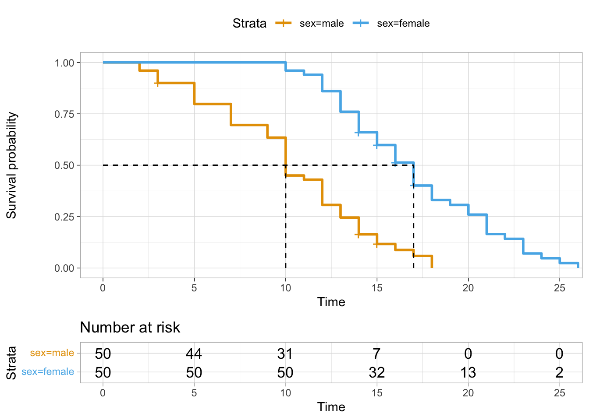
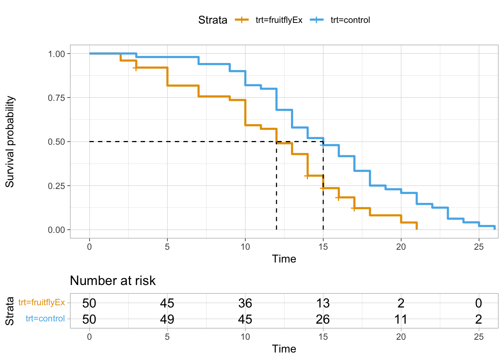
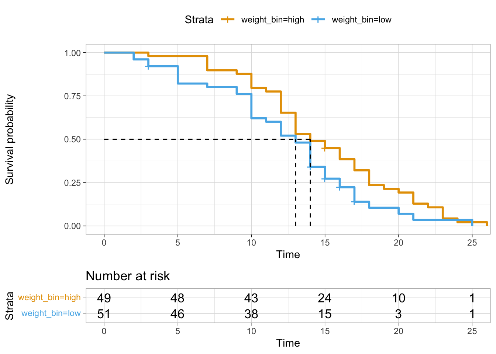

47 Überlebenszeitanalysen
Version vom February 18, 2023 um 10:39:11

47.1 Genutzte R Pakete für das Kapitel
Wir wollen folgende R Pakete in diesem Kapitel nutzen.
Am Ende des Kapitels findest du nochmal den gesamten R Code in einem Rutsch zum selber durchführen oder aber kopieren.
47.2 Daten
[1] 1561 1561 1561 1559 1556 1556 1555tibble(death = c(rep(0, 4,), rpois(10, 0.75)),
count = cumsum(c(1512, -1*death[-1]))) %>%
uncount(death, .remove = FALSE)# A tibble: 7 × 2
death count
<dbl> <dbl>
1 1 1511
2 1 1510
3 1 1509
4 1 1508
5 1 1507
6 2 1505
7 2 1505library(tidyr) # version >= 0.8.0
df <- data.frame(var1=c('a', 'b', 'c'), var2=c('d', 'e', 'f'), freq=1:3)
df %>%
uncount(freq) var1 var2
1 a d
2 b e
3 b e
4 c f
5 c f
6 c fset.seed(20220929)
surv_tbl <- tibble(times_raw = round(c(rpois(50, 10), rpois(50, 14))),
status = rbinom(100, 1, 0.8),
trt = factor(gl(2, 50), labels = c("fruitflyEx", "control")),
sex = sample(factor(gl(2, 50), labels = c("male", "female"))),
times= ifelse(sex == "male", times_raw - 2, times_raw + 5),
weight = round(c(rnorm(50, 11, 3), rnorm(50, 19, 3)), 2),
weight_bin = ifelse(weight <= 15, "low", "high"))
fit <- survfit(Surv(times, status) ~ sex,
data = surv_tbl)
# Visualize with survminer
ggsurvplot(fit, data = surv_tbl, risk.table = TRUE,
surv.median.line = "hv",
ggtheme = theme_light(),
palette = cbbPalette[2:8])
fit <- survfit(Surv(times, status) ~ trt,
data = surv_tbl)
# Visualize with survminer
ggsurvplot(fit, data = surv_tbl, risk.table = TRUE,
surv.median.line = "hv",
ggtheme = theme_light(),
palette = cbbPalette[2:8])
fit <- survfit(Surv(times, status) ~ weight_bin,
data = surv_tbl)
# Visualize with survminer
ggsurvplot(fit, data = surv_tbl, risk.table = TRUE,
surv.median.line = "hv",
ggtheme = theme_light(),
palette = cbbPalette[2:8])
coxph(Surv(times, status) ~ trt + sex + weight, data = surv_tbl)Call:
coxph(formula = Surv(times, status) ~ trt + sex + weight, data = surv_tbl)
coef exp(coef) se(coef) z p
trtcontrol -1.40920 0.24434 0.35256 -3.997 6.41e-05
sexfemale -1.93273 0.14475 0.26391 -7.323 2.42e-13
weight 0.02143 1.02167 0.03577 0.599 0.549
Likelihood ratio test=65.45 on 3 df, p=4.029e-14
n= 100, number of events= 93 coxph(Surv(times, status) ~ trt + sex + weight_bin, data = surv_tbl)Call:
coxph(formula = Surv(times, status) ~ trt + sex + weight_bin,
data = surv_tbl)
coef exp(coef) se(coef) z p
trtcontrol -1.6240 0.1971 0.3489 -4.654 3.25e-06
sexfemale -1.9852 0.1374 0.2647 -7.500 6.40e-14
weight_binlow -0.4716 0.6240 0.3179 -1.484 0.138
Likelihood ratio test=67.32 on 3 df, p=1.603e-14
n= 100, number of events= 93